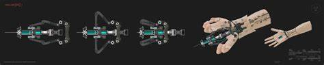

Veamos el Futuro
Explora los límites de la Medicina
Representaciones de Prótesis con Capacidades Ampliadas en Videojuegos
Los videojuegos han explorado el concepto de prótesis con capacidades ampliadas como una forma de narrativa y diseño futurista. Juegos como Cyberpunk 2077, Deus Ex, y Metal Gear Solid V presentan mundos donde las prótesis no solo restauran funciones perdidas, sino que redefinen la idea de lo que un cuerpo humano puede lograr, combinando tecnología y biología de formas espectaculares.
1. Cyberpunk 2077
En Cyberpunk 2077, las prótesis biónicas y los implantes cibernéticos son parte integral de la vida cotidiana.
tipos de protesis:
Mejoras de combate: Brazos con hojas retráctiles, piernas para saltos extremos, implantes oculares con visión térmica o infrarroja.
Optimización de habilidades: Aumentos en fuerza, velocidad y precisión, como el "Kerenzikov," que permite moverse más rápido en combate.
Reflexión Social y Ética: El juego aborda temas como la deshumanización, desigualdad económica y adicción a las mejoras tecnológicas.
2. Deus Ex (Saga)
La franquicia Deus Ex es famosa por su enfoque en la relación entre humanos y aumentos tecnológicos.
Prótesis y Argumentaciones:
Prótesis multifuncionales que otorgan visión aumentada, invisibilidad temporal, o fuerza sobrehumana.
Brazos protésicos que funcionan como armas o herramientas.
Temas Filosóficos:
El impacto de estas tecnologías en la identidad humana y los conflictos entre los "aumentados" y los "naturales."
Preguntas sobre el control corporativo de estas innovaciones.
3. Metal Gear Solid V: The Phantom Pain
El protagonista, Venom Snake, usa una prótesis de brazo que no solo reemplaza su extremidad perdida, sino que también actúa como arma y herramienta táctica.
Características del Brazo Protésico:
Uso de gadgets integrados, como lanzadores de misiles o descargas eléctricas.
Capacidad de interactuar con el entorno de maneras innovadoras, como golpear enemigos a distancia.
Impacto Narrativo: El brazo biónico simboliza la resiliencia y la capacidad de adaptación del personaje.

4. Ghost in the Shell: Stand Alone Complex (Basado en el Anime)
Aunque basado en una serie de anime, los videojuegos de Ghost in the Shell presentan personajes con cuerpos cibernéticos completos.
Cuerpos Totalmente Cibernéticos:
Los personajes, como Motoko Kusanagi, pueden transferir su conciencia a otros cuerpos, llevando la idea de prótesis al extremo.
Habilidades como hackear sistemas o aumentar capacidades de percepción.
Reflexión Filosófica: Qué define a una persona cuando su cuerpo físico puede ser completamente reemplazado.
5. Apex Legends
En este juego de battle royale, personajes como Octane y Revenant destacan el uso de prótesis y cibernética.
Octane: Piernas biónicas que le permiten moverse rápidamente y realizar acrobacias.
Revenant: Un ser completamente reconstruido con tecnología cibernética, representando una versión extrema de las prótesis.
6. Horizon Forbidden West
Aunque no enfocado directamente en prótesis humanas, el juego presenta tecnología avanzada integrada en el mundo, donde la funcionalidad humana y mecánica convergen. Algunos personajes usan tecnología prostética para mejorar su capacidad de combate o supervivencia.
Impacto en el Público y Reflexión Social
Inspiración Tecnológica: Estas representaciones han inspirado debates sobre cómo los avances en prótesis reales podrían llegar a parecerse a los de los videojuegos.
Críticas y Reflexiones: Los juegos a menudo plantean preguntas éticas sobre el uso de la tecnología para ampliar capacidades humanas, así como los posibles costos sociales y psicológicos de depender de ella.
Los videojuegos no solo entretienen, sino que también actúan como plataformas para explorar los límites y posibilidades de la tecnología, mostrando cómo las prótesis pueden trascender el ámbito médico y convertirse en símbolos de empoderamiento, innovación y, a veces, peligro.